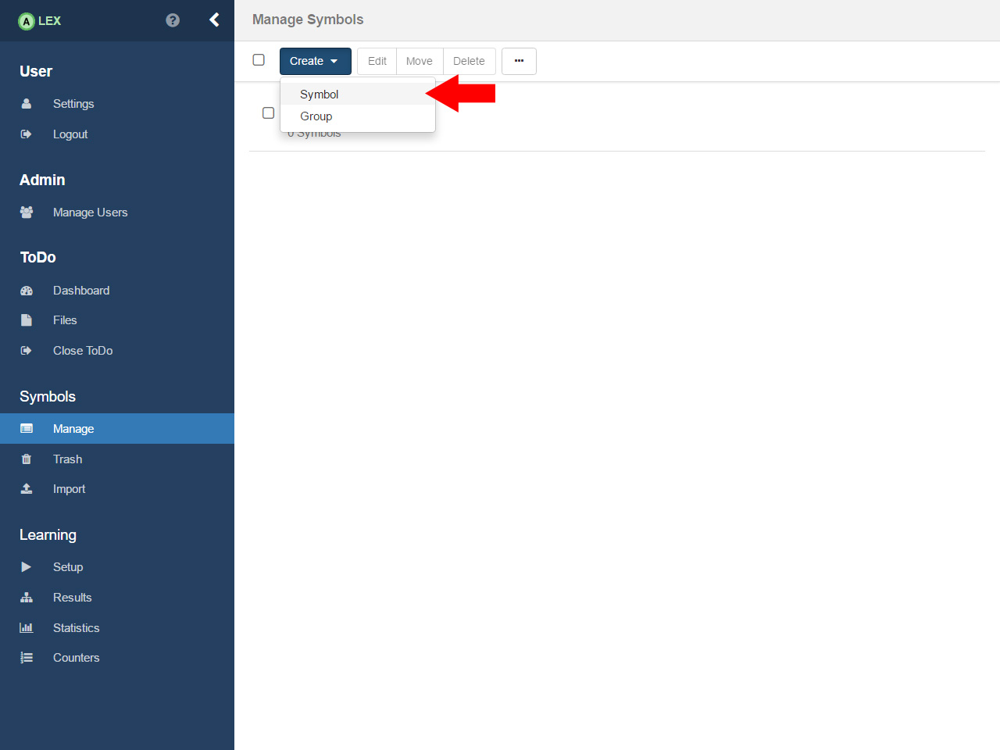
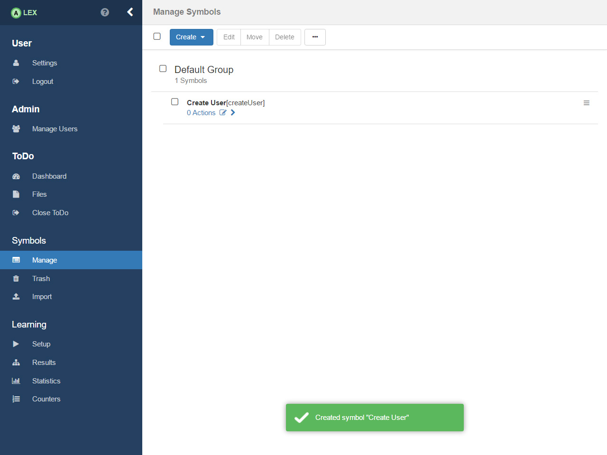

Symbol Setup


In order to create symbols, click on the item Manage under the group Symbols in the sidebar in order to get to the view to manage symbols of the project. At first, only the default group and no symbols are displayed.
Create Symbols
Now, we create the symbols that should model funcionalities of the application under learning. Before we do so, let us record the functionalities of ToDo that should be tested. In ToDo, we can:
- Create a new user
- Login a user in the system
- Logout the current user
- Delete the current user
- Create a task
- Update a task
- Delete a task
- Create a category
- Update a category
- Delete a category
- Assign a category to a task
As a consequence, we will create the symbols Create User, Login, Logout, Delete User, Create Task, Update Task, Delete Task, Create Category, Update Category, Delete Category and Assign category.
In addition to that, we will also create a symbol Reset with which we model the logic for the reset of the application. This is required since for every query that is posed, the application should be in its initial state.

In order to create a symbol, click on the menu button Create in the bar on the top and choose the entry with the text Symbol. A modal window pops up, asking for a name, an abbreviation and a group.

As the name, we use the ones from above and for the abbreviation, we use the lower camel case variant of the name. For example, We create a symbol Create User with the abbreviation createUser. The field for the group is left empty. After the click on the Create button, the symbol should be listed under the default group.

Analogous, all other symbols including the reset symbol are created.